将页面 head 中的
PAGE_PUBLISHED 改为 true 即可显示正文。
3D Gaussian Splatting 正从研究 demo 走向生产工具——但体验仍然碎片化。腾讯混元选择了 Mesh 路线，同时仍输出 3DGS 点；其余玩家都在拼 mesh 生成；而专门处理 splat 的工具（采集 → 训练 → 清理 → 导出）被拆散在本地 / 云端、移动 / 桌面之间。这个尚未被整合的空白，是一套面向专业用户的、清晰连贯的端到端界面/完整工作流。
00概述
AI辅助竞品走查对公开 3DGS 生态的竞品梳理（截至 2025–2026）。分为两部分： 第一部分看 AI 生成 3D / 3DGS 的产品（做出了什么），第二部分看 3DGS 建模与模型处理平台（splat 如何被真正采集、训练、清理与交付），并带界面层面的分析。
用手机把一个椅子从各个角度拍几秒，然后这段视频被"变成"一个能绕着走的 3D 场景——照片级真实、加载很轻、算法直接生成。这大致就是 3DGS 干的事。"高斯泼溅（Gaussian splat）"只是它用来"画"出这个场景的那些小毛茸茸的点的技术名字。为什么大家关心：以前做 3D 得请 3D 美术；现在 3DGS + AI 让几乎任何人都能拍出来或生成 3D，并直接丢进 App、游戏或网页。这一页下面，就是在讲谁在做这些工具。
结论来自公开的产品页与评测，并非逐项实测。下面的界面图是示意草图（展示每个工具界面大致长什么样），不是逐像素的截图。凡厂商自报的数据均标注为"厂商口径"。本页是一份 设计研究产物，不是已上线的产品——与那份 3DGS 管线分析是同一口径。
01第一部分 — AI 生成的 3D / 3DGS 产品
做出了什么：生成 vs 重建两条路线并存。生成式工具吃文本或图片、吐出 mesh（Tripo、Meshy、Rodin、Stable-Fast-3D）；重建式工具吃照片 / 视频、吐出 mesh 或辐射场——腾讯混元 WorldMirror 是同时输出 3DGS 点与标准 mesh 的代表。一个共同的现实是：它们都替代不了 3D 美术，任何产出在进生产前都还要经过重拓扑、UV、材质与引擎接入。
01·a逐个看懂（大白话）
左边是界面示意，右边是它到底干什么——不打术语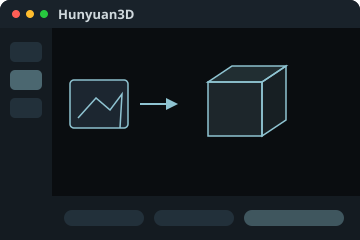
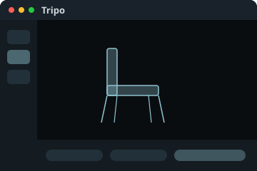
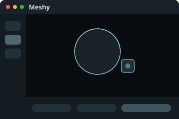
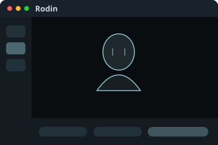
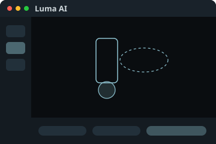
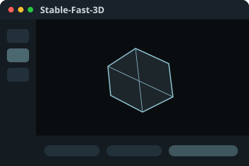
| 产品 | 路线 | 输出 | 优势 | 短板 | 获取方式 |
|---|---|---|---|---|---|
| 腾讯混元3D（WorldMirror） | 统一前馈重建——图 / 视频 / 深度 / 位姿输入 | 3DGS 点 与 标准 Mesh（GLB / OBJ） | 免费、开放权重、可本地部署；一次前向传播即得点云、深度、法线、3DGS、新视角 | 为管线兼容默认选 Mesh；玻璃 / 极端光照下细节丢失 | 免费 / 开源（本地需 ≥16GB 显存） |
| Tripo（VAST） | 文 / 图 → Mesh | 干净四边形网格、自动绑定与动画、批量 | 约 8 秒出结果；风格化（体素 / 卡通 / 乐高）；拓扑干净 | 主角资产仍需后处理 | 约 $12–14 / 月 |
| Meshy | 文 / 图 → Mesh | PBR 网格、可打印 STL | 插件生态最成熟（Blender / Unity / Unreal）；贴图质感好 | 生产级仍需清理 | $16–20 / 月 |
| Rodin（Hyper3D） | 几何 + 贴图分步生成 | 4K PBR、GLB / STL / USDZ | 保真度最高；专业级控制 | 慢（2–5 分钟）；贵 | $99 / 月 |
| Luma AI | 捕捉 → GS / NeRF（非文生） | OBJ / USDZ / GLB / PLY | 真实物体照片级捕捉；Genie 免费档 | 云端每扫描 20–30 分钟；文生质量不稳定 | 免费增值 |
| Stable-Fast-3D | 图 → 低多边形网格 | GLB | 约 0.5 秒；游戏资产量产 | 贴图中等；需后处理 | 开源 / API |
- Mesh 与 3DGS 是路线之分，不是质量之争。 Mesh 今天就能直接进 Blender / Unity / Unreal；3DGS 是可看的辐射场，仍与工业管线打架。混元两者都给、默认 Mesh——这是"和你的现有工具箱对话"的刻意选择。
- "生成式 3D"只是背景 / 道具资产的头 80%，不是主角资产。 任何厂商的产出都要重拓扑、UV、材质与引擎准备。
- 本地 / 云端 / 开放权重已成为定位轴。 混元免费且可自托管；其余是订阅制。
- 中文界面 / 中文提示词支持以 Tripo 与混元最好。
差异点早已不是"能不能生成"，而是生成之后的体验：清理、格式、与引擎的衔接、迭代速度。谁把这段"混乱的中间"做清楚，谁就赢得专业用户——这正是下一个端到端 3DGS 平台最有条件补上的缺口。
02第二部分 — 3DGS 建模与处理平台
splat 工具链的界面竞品分析这些才是真正端到端处理 Gaussian splat 的工具。它们按工作发生的位置分化——设备端、云端或桌面——以及把多少流程收进同一个界面。下面这条工作流是它们共有的，而痛点出奇地一致。
02·a逐个看懂（大白话）
左边是界面示意，右边是它到底干什么——不打术语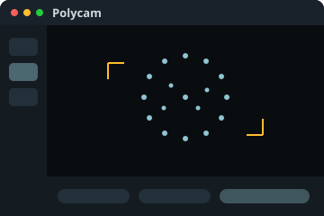
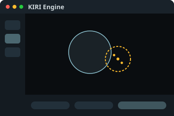
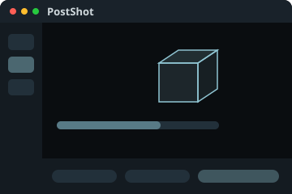
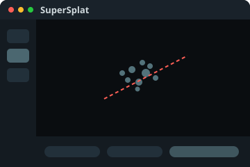
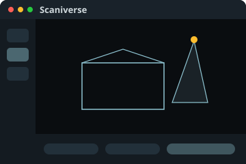
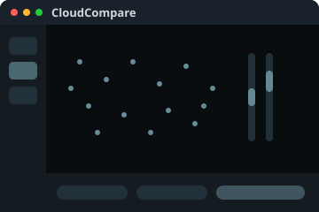
| 工具 | 位置 | 本地 / 云端 | 流程完整度 | 编辑 | 导出 | 获取方式 |
|---|---|---|---|---|---|---|
| Polycam | 网页 + 移动端 | 云端 | 捕捉 → GS，含测量工具 | 应用内裁剪 / 缩放 / 调整 | 多格式（Pro 档） | 订阅 |
| Luma AI | 移动 + 云端 | 云端 | 捕捉 → GS / NeRF | 有限 | OBJ / USDZ / GLB / PLY | 免费增值（每扫描 20–30 分钟） |
| KIRI Engine | 移动 + 云端 + Blender 插件 | 云端（含设备端裁剪） | 捕捉 → 3DGS + Mesh；统一 PBR 光照 | 移动端 Sphere / Plane / Brush 裁剪；Blender 编辑 / 渲染模式 | .splats / .ply / .obj + Mesh 包 | €90 / 年（解锁 3DGS） |
| PostShot（Jungle） | Windows 桌面 | 本地（NVIDIA） | 对齐 + 位姿 + 训练同一界面 | 训练实时预览、参数调优 | Blender / Unreal / After Effects | 付费（需 RTX） |
| SuperSplat（PlayCanvas） | 网页 | 浏览器 | 查看 / 清理 / 压缩 | 手动选删；SplatTransform CLI | HTML viewer / PLY | 免费 |
| Scaniverse（Niantic） | iOS（LiDAR） | 本地（设备端） | 扫描 → GS | 裁剪 / 缩放 / 调整 | PLY → Blender / Unity / Unreal | 免费 |
| CloudCompare / MeshLab | 桌面 | 本地 | 点云查看 / 过滤 / 转换 | 过滤 / 清理 | PLY ↔ mesh | 免费 |
- 本地 vs 云端是第一道体验决策。 PostShot、SuperSplat、Scaniverse 把数据留在本地、近乎即时；Polycam、Luma、KIRI 用云端换质量。
- "单界面完整度"差异明显。 PostShot 在一个窗口里完成对齐 → 训练（对新手最友好）；其余要把移动捕捉 + 云端 + 桌面编辑拼起来。
- 设备端先做一道清理是聪明模式。 KIRI 的 Sphere / Plane / Brush 与 Scaniverse 的裁剪在上传前就清掉背景，把云负载降 30–40%——这是尊重用户带宽与账单的设计。
- 编辑的隐喻不同。 SuperSplat = 浏览器里选删；KIRI = Blender 原生编辑 / 渲染切换；PostShot = 训练期参数。还都没有消费级的语义清理（如"去掉所有人"）。
- 导出碎片化是真实痛点。 PLY 并非统一标准；SuperSplat / PostShot 重新存一遍能修兼容性。格式到引擎的衔接仍是手动。
未被满足的需求是一套清晰连贯的端到端界面：让专业用户从采集 → 训练出的 splat → 清理后的资产 → 引擎就绪的导出，全程不离开产品、也无需学四个工具。针对上面六个一致的痛点来设计：采集阈值（重叠 / 光照）、训练黑盒 + OOM、无自动清理、格式杂、缺发布质检清单。这正对应另一份单独准备的六阶段分析——产品机会，就是把这些分析落成一套连贯的界面。
03结论
3DGS 体验设计师该落手的几点- 路线要清晰。 按用例决定 Mesh 默认还是 3DGS 默认，别把一种表征硬塞给所有流程。
- 胜负在"混乱的中间"。 清理、导出、与引擎的衔接——而不是生成——才是专业用户今天耗时之处。
- 一个连贯的界面胜过一套工具链。 设备端预清理 + 云端训练 + 应用内编辑，是要被超越的范式。
- 为"语义操作"而非"几何操作"设计。 "去掉所有人"胜过"删这 400 个 splat"——下一步的跃迁是意图，而非更多滑块。